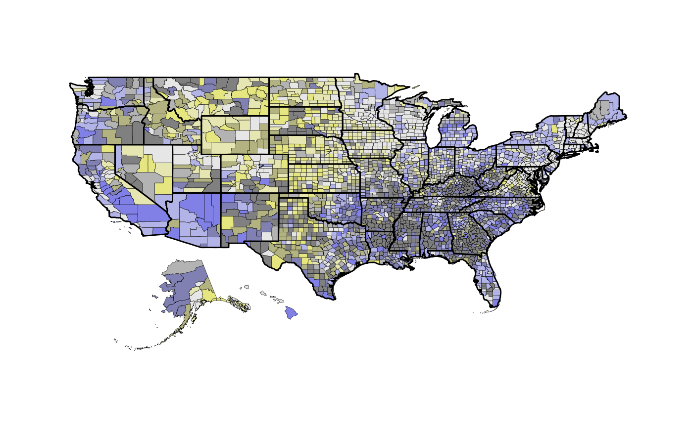

This function builds a map that visualises estimates and errors simultaneously with a bivariate colour scheme.
build_bmap( data, geoData = NULL, id = NULL, border = NULL, palette = "BlueYellow", size = NULL, terciles = FALSE, bound = NULL, flipAxis = FALSE )
| data | A data frame. |
|---|---|
| geoData | A spatial polygons data frame. |
| id | Name of the common column shared by the objects passed to
|
| border | Name of geographical borders to be added to the map. It must be
one of |
| palette | Name of colour palette or character vector of hex colour codes
from the |
| size | An integer between 1 and 20. Value controls the size of points
when |
| terciles | A logical value. This provides the option to define numerical bounds for the colour key grid using terciles instead of equal intervals. |
| bound | Output from the |
| flipAxis | A logical value. Whether to place the axis on the opposite sides or not. |
If geoData remains NULL, the function will produce a map of
plotted points representing specific sites; in this case, the data frame must
include latitude and longitude coordinates in columns "long" and
"lat".
data(us_data) data(us_geo) poverty <- read.uv(data = us_data, estimate = "pov_rate", error = "pov_moe") # bivariate map with a spatial polygons data frame map <- build_bmap(data = poverty, geoData = us_geo, id = "GEO_ID", border = "state", terciles = TRUE) view(map)